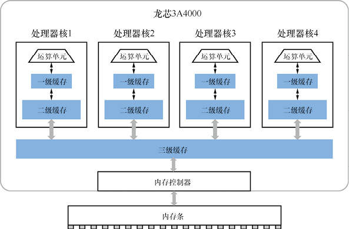

首页 > 编程笔记
CPU缓存（Cache）到底是什么？
容量小而速度快的缓存在生活中也有实例：你的书桌上只摆着近期要看的少量书籍，而大量的书籍只会收在书柜里。书桌就是一种缓存。
缓存（Cache）是 CPU 和内存之间的一个数据存储区域，用来提高 CPU 访问内存的速度。
现代计算机中的 CPU 运行速度远远超过内存访问速度，换句话说，内存访问速度拖慢了 CPU 的运行速度。
例如，一个典型的 64 位桌面 CPU，工作主频是 2GHz，再加上多发射技术可以在一个时钟节拍内并行处理多条指令，这样每秒执行的指令数量就达到了 100 亿条，即每秒可以最多执行1010 次 64 位整数运算。而内存的速度提升相对比较缓慢，现在台式计算机、服务器上使用的最先进的 DDR4 内存规范，工作在 2.4GHz 时的理论峰值传输速度为 19200MB/s，相当于每秒只能给 CPU 传送 2.4×109 个 64 位整数，比 CPU 的速度慢了一个数量级。
当内存数据的供应速度跟不上 CPU 的计算速度时，CPU 只能等待内存，从而白白浪费计算时间。
缓存是使用比内存速度更快的半导体工艺制造的一块存储区域，CPU 访问缓存的速度要远远快于内存。由于制造缓存的成本比内存高，因此缓存不可能做得太大，常见计算机的内存容量在吉字节（GB）级别，而缓存容量一般不超过几十兆字节（MB）。
缓存中保存的数据是内存的一个“局部备份”。CPU 访问过的内存单元的数据都在缓存中保存起来。这样，当 CPU 再次访问相同地址的内存单元时，只需要从缓存中快速读取出数据即可，速度比访问内存快几十倍，甚至上百倍。
缓存的设计利用了计算机中的一个事实规律——“数据局部性”，即 CPU 访问的数据往往只占整个内存中非常小的一个比例，但是 CPU 会多次重复使用这些数据，这样的数据也叫作“热点数据”。缓存就是以非常小的容量保存这些热点数据的，让 CPU 在执行绝大多数的访存指令时都能快速完成。
缓存作为 CPU 和内存之间的桥梁，以较小的成本巧妙解决了内存速度不匹配的问题，是计算机原理中一个闪光的思想。
目前 CPU 主要使用多级缓存的结构，将缓存分成多个级别。离指令运算单元越近的缓存速度越快、容量越小，离指令运算单元越远的缓存速度越慢、容量越大。
CPU 执行访存指令时，先在一级缓存中查找，如果查找到数据则完成指令，否则要到更高级别的缓存中查找，如果在所有缓存中都没有查找到数据才访问内存。
使用多级缓存的优点是平衡了成本和速度之间的矛盾，能够以最适中的成本取得综合的最优速度。
常用的 CPU 中的缓存最多分为三级。2000 年之前由于半导体工艺的限制，二级缓存、三级缓存经常作为 CPU 之外的独立芯片，而现在都已经是集成在 CPU 芯片内部的电路模块。
在芯片中，缓存占用的电路面积已经超过了处理器核，因此增大缓存会直接增大芯片成本，所以缓存也是体现 CPU 性能的一个重要参数。
龙芯 3A4000 在一个芯片中包含 4 个独立的处理器核，缓存分为三级。每个处理器核中有 64KB 一级缓存、256KB 二级缓存。4 个处理器核共享 8MB 三级缓存。
龙芯 3A4000 的缓存结构如下图所示。
缓存（Cache）是 CPU 和内存之间的一个数据存储区域，用来提高 CPU 访问内存的速度。
现代计算机中的 CPU 运行速度远远超过内存访问速度，换句话说，内存访问速度拖慢了 CPU 的运行速度。
例如，一个典型的 64 位桌面 CPU，工作主频是 2GHz，再加上多发射技术可以在一个时钟节拍内并行处理多条指令，这样每秒执行的指令数量就达到了 100 亿条，即每秒可以最多执行1010 次 64 位整数运算。而内存的速度提升相对比较缓慢，现在台式计算机、服务器上使用的最先进的 DDR4 内存规范，工作在 2.4GHz 时的理论峰值传输速度为 19200MB/s，相当于每秒只能给 CPU 传送 2.4×109 个 64 位整数，比 CPU 的速度慢了一个数量级。
当内存数据的供应速度跟不上 CPU 的计算速度时，CPU 只能等待内存，从而白白浪费计算时间。
缓存是使用比内存速度更快的半导体工艺制造的一块存储区域，CPU 访问缓存的速度要远远快于内存。由于制造缓存的成本比内存高，因此缓存不可能做得太大，常见计算机的内存容量在吉字节（GB）级别，而缓存容量一般不超过几十兆字节（MB）。
缓存中保存的数据是内存的一个“局部备份”。CPU 访问过的内存单元的数据都在缓存中保存起来。这样，当 CPU 再次访问相同地址的内存单元时，只需要从缓存中快速读取出数据即可，速度比访问内存快几十倍，甚至上百倍。
缓存的设计利用了计算机中的一个事实规律——“数据局部性”，即 CPU 访问的数据往往只占整个内存中非常小的一个比例，但是 CPU 会多次重复使用这些数据，这样的数据也叫作“热点数据”。缓存就是以非常小的容量保存这些热点数据的，让 CPU 在执行绝大多数的访存指令时都能快速完成。
缓存作为 CPU 和内存之间的桥梁，以较小的成本巧妙解决了内存速度不匹配的问题，是计算机原理中一个闪光的思想。
缓存的常用结构
台式计算机、服务器一般最多有三级缓存，超级计算机可能有四级缓存。目前 CPU 主要使用多级缓存的结构，将缓存分成多个级别。离指令运算单元越近的缓存速度越快、容量越小，离指令运算单元越远的缓存速度越慢、容量越大。
CPU 执行访存指令时，先在一级缓存中查找，如果查找到数据则完成指令，否则要到更高级别的缓存中查找，如果在所有缓存中都没有查找到数据才访问内存。
使用多级缓存的优点是平衡了成本和速度之间的矛盾，能够以最适中的成本取得综合的最优速度。
常用的 CPU 中的缓存最多分为三级。2000 年之前由于半导体工艺的限制，二级缓存、三级缓存经常作为 CPU 之外的独立芯片，而现在都已经是集成在 CPU 芯片内部的电路模块。
在芯片中，缓存占用的电路面积已经超过了处理器核，因此增大缓存会直接增大芯片成本，所以缓存也是体现 CPU 性能的一个重要参数。
龙芯 3A4000 在一个芯片中包含 4 个独立的处理器核，缓存分为三级。每个处理器核中有 64KB 一级缓存、256KB 二级缓存。4 个处理器核共享 8MB 三级缓存。
龙芯 3A4000 的缓存结构如下图所示。

图1：龙芯 3A4000 的缓存结构
图1：龙芯 3A4000 的缓存结构
关注公众号「站长严长生」，在手机上阅读所有教程，随时随地都能学习。内含一款搜索神器，免费下载全网书籍和视频。

微信扫码关注公众号